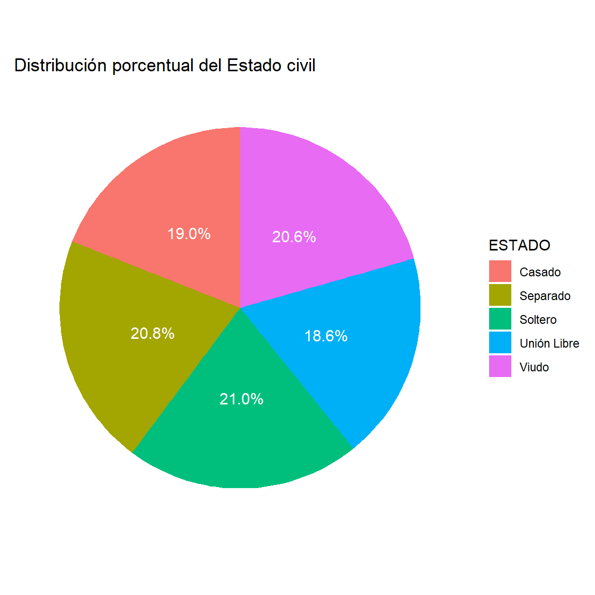
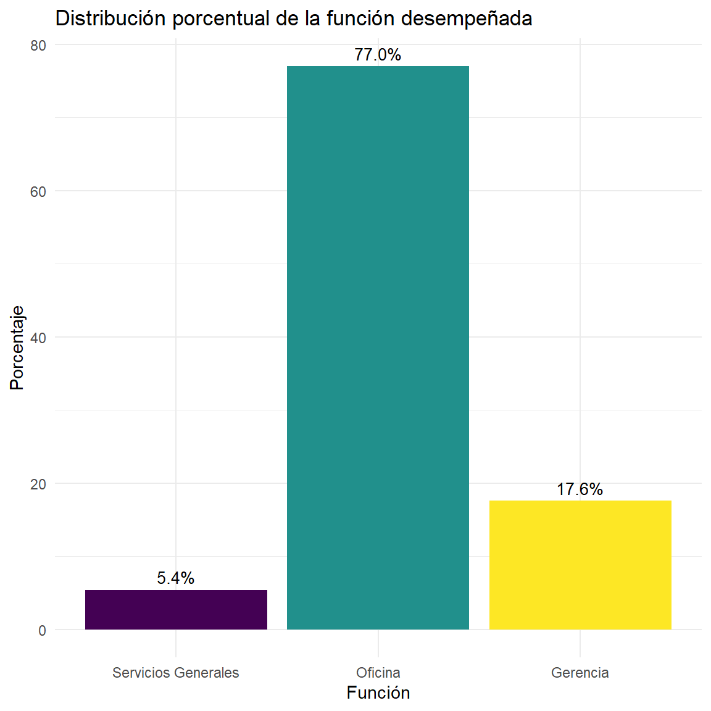
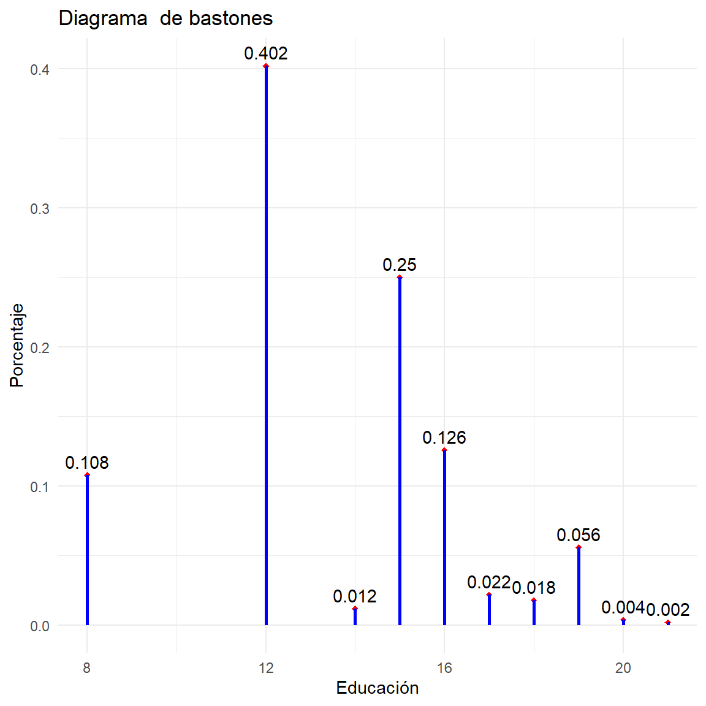
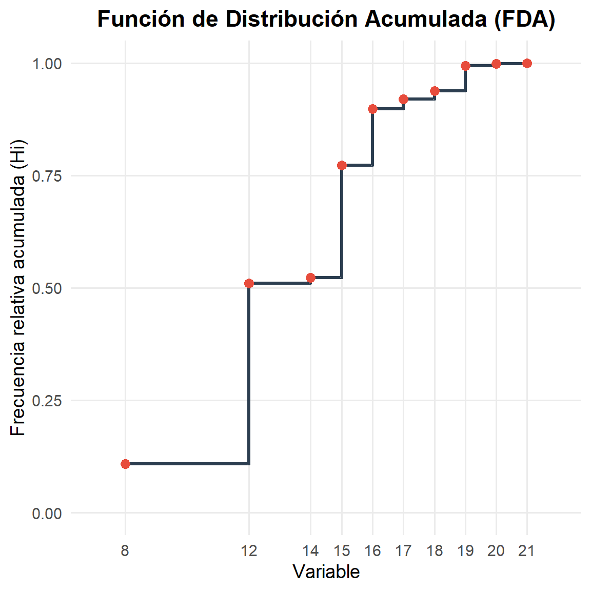
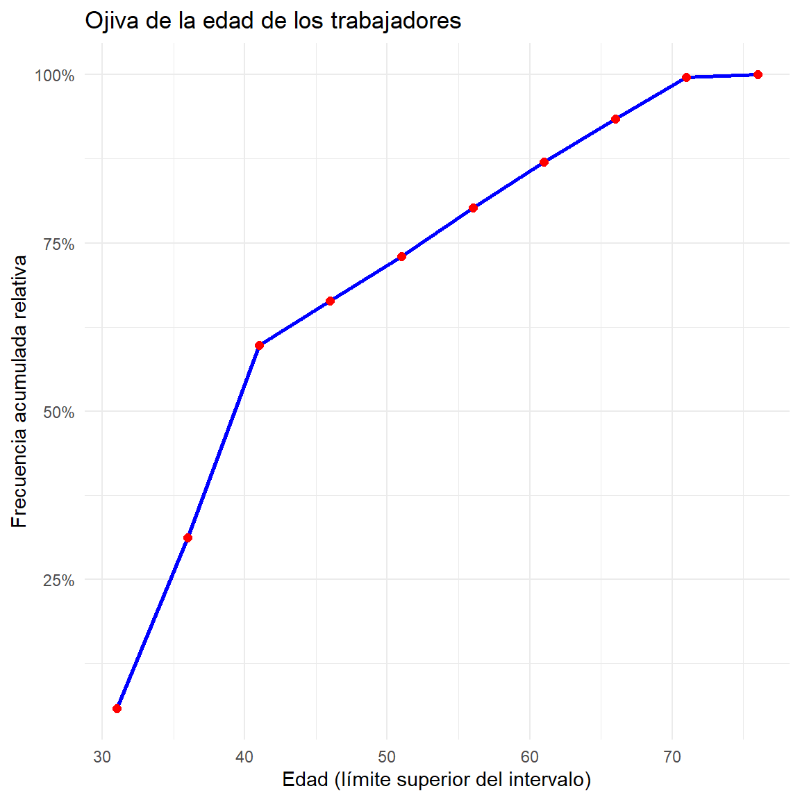
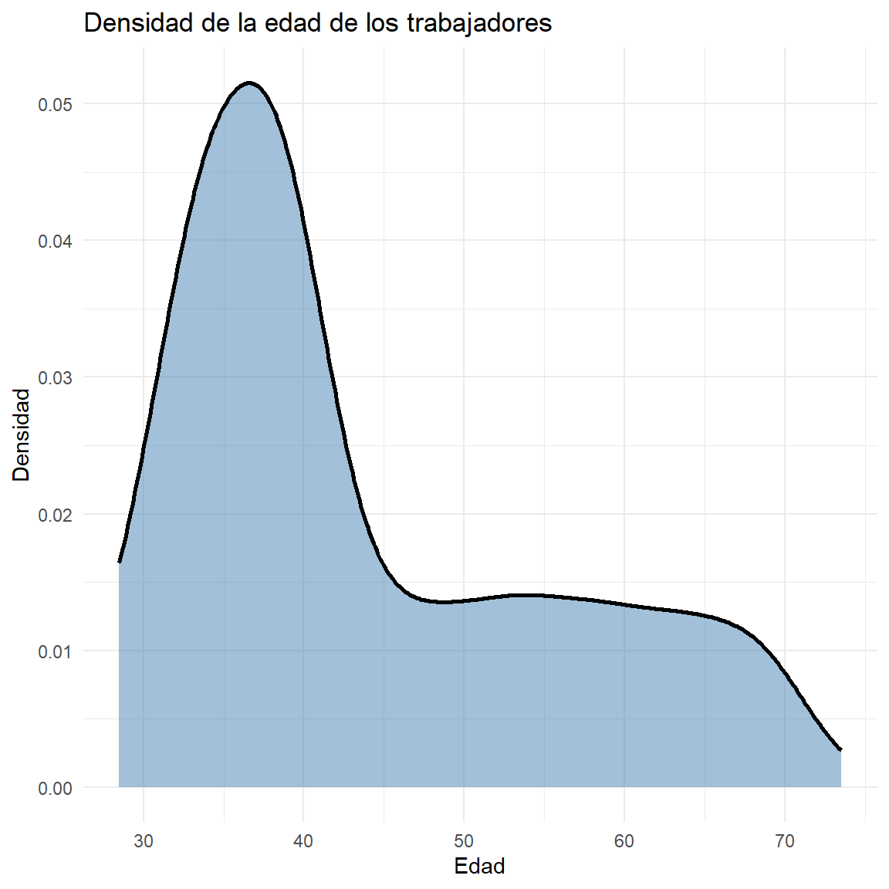
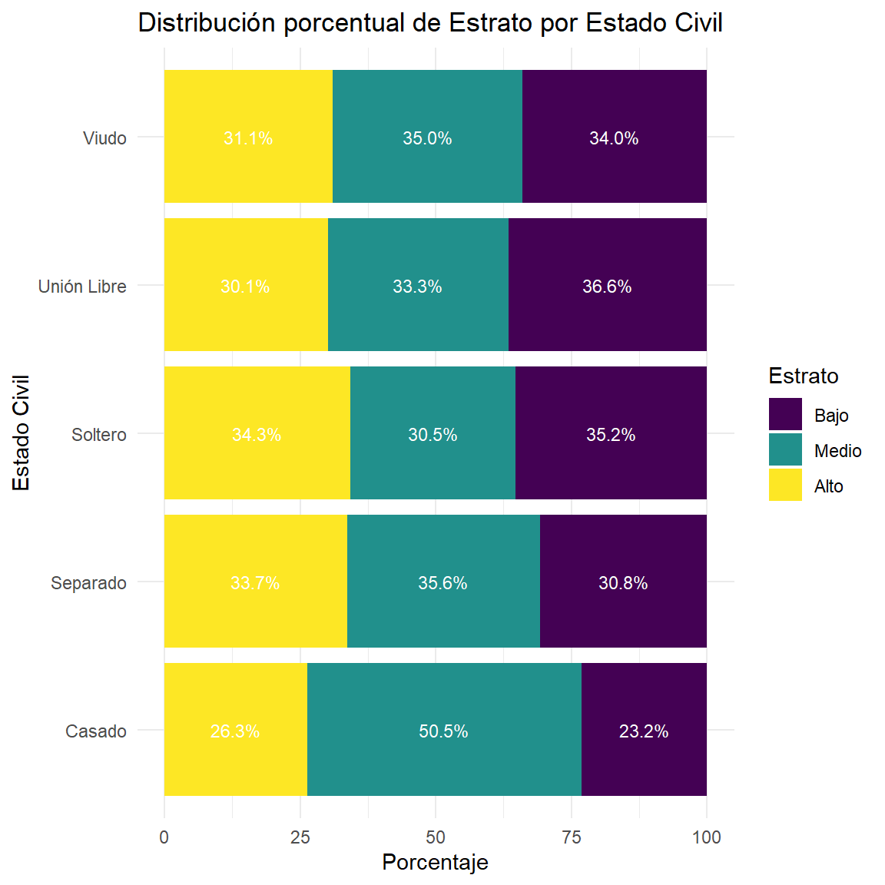

Ver código
options(
knitr.table.format = "html",
scipen = 999
)options(
knitr.table.format = "html",
scipen = 999
)ipak <- function(pkg){
options(repos = c(CRAN = "https://cloud.r-project.org"))
new.pkg <- pkg[!(pkg %in% rownames(installed.packages()))]
if(length(new.pkg)) install.packages(new.pkg, dependencies = TRUE)
invisible(lapply(pkg, function(p)
suppressPackageStartupMessages(library(p, character.only = TRUE))
))
}
packages <- c("tidyverse","kableExtra","readxl",
"palmerpenguins")
ipak(packages)[@tidyverse; @kableExtra]
Distribución de Frecuencias
1. Concepto
Una distribución de frecuencias es una forma de organizar y resumir los datos estadísticos mediante una tabla que muestra los valores que puede tomar una variable y el número de veces que aparece cada uno de ellos en el conjunto de datos.
Formalmente, si se tiene una muestra de tamaño n formada por observaciones de una variable X
X = {x_1, x_2, x_3, \ldots, x_n}
La distribución de frecuencias consiste en agrupar los valores de (X) en categorías o clases y determinar cuántas observaciones pertenecen a cada una de ellas.
Este procedimiento permite:
2. Tipos de Frecuencias
En una tabla de distribución de frecuencias se utilizan diferentes medidas para describir la presencia de cada valor o intervalo.
2.1 Frecuencia Absoluta
La frecuencia absoluta representa el número de veces que aparece un valor o clase en el conjunto de datos.
Se denota por:
f_i
donde:
La suma de todas las frecuencias absolutas es igual al tamaño de la muestra:
\sum_{i=1}^{k} f_i = n
2.2 Frecuencia Absoluta Acumulada
La frecuencia absoluta acumulada representa la suma progresiva de las frecuencias absolutas hasta una determinada categoría.
Se denota por:
F_i
y se calcula como:
F_i = \sum_{j=1}^{i} f_j
La última frecuencia acumulada siempre es igual al tamaño total de la muestra:
F_k = n
2.3 Frecuencia Relativa
La frecuencia relativa expresa la proporción de observaciones que corresponde a una categoría respecto al total de datos.
Se denota por:
h_i
y se calcula como:
h_i = \frac{f_i}{n}
Propiedad:
0 \le h_i \le 1
y
\sum_{i=1}^{k} h_i = 1
2.4 Frecuencia Relativa Acumulada
La frecuencia relativa acumulada representa la suma progresiva de las frecuencias relativas.
Se denota por:
H_i
y se calcula como:
H_i = \sum_{j=1}^{i} h_j
Propiedad:
H_k = 1
2.5 Frecuencia Porcentual
La frecuencia porcentual expresa la frecuencia relativa en porcentaje.
Se calcula como:
p_i = h_i \times 100
Propiedad:
\sum_{i=1}^{k} p_i = 100
3. Distribución de Frecuencias para Datos Agrupados
Cuando los datos son numerosos, se agrupan en intervalos de clase.
Un intervalo de clase se define como:
(L_i, L_s)
donde:
3.1 Amplitud de Clase
La amplitud de clase se calcula como:
A = L_s - L_i
o también mediante:
A = \frac{R}{k}
donde:
3.2 Rango
El rango mide la dispersión total de los datos:
R = X_{max} - X_{min}
3.3 Marca de Clase
La marca de clase representa el punto medio de cada intervalo:
x_i = \frac{L_i + L_s}{2}
4. Propiedades de la Distribución de Frecuencias
Las distribuciones de frecuencias poseen varias propiedades fundamentales:
1. Conservación del tamaño de la muestra
\sum_{i=1}^{k} f_i = n
2. Suma de frecuencias relativas
\sum_{i=1}^{k} h_i = 1
3. Suma de frecuencias porcentuales
\sum_{i=1}^{k} p_i = 100
4. Monotonía de las frecuencias acumuladas
Las frecuencias acumuladas son crecientes:
F_1 \le F_2 \le F_3 \le \cdots \le F_k
5. Último valor acumulado
F_k = n
y
H_k = 1
5. Estructura de una Tabla de Distribución de Frecuencias
Una tabla típica contiene las siguientes columnas:
| Clase | Marca de clase | Frecuencia absoluta | Frecuencia acumulada | Frecuencia relativa | Frecuencia relativa acumulada |
|---|---|---|---|---|---|
| C_i | x_i | f_i | F_i | h_i | H_i |
Tablas de doble entrada
Estructura de una Tabla de Doble Entrada
Una tabla de doble entrada (o tabla de contingencia) es una herramienta que permite organizar y resumir datos correspondientes a dos variables simultáneamente, mostrando cómo se distribuyen de manera conjunta.
Componentes principales
Una tabla de doble entrada está compuesta por:
Filas Representan las categorías de una primera variable (Variable A).
Columnas Representan las categorías de una segunda variable (Variable B).
Celdas internas Contienen las frecuencias (absolutas o relativas) que corresponden a la combinación de ambas variables.
Totales marginales
Total general Suma total de todas las observaciones (n)
Estructura general
| Categoría B1 | Categoría B2 | … | Total | |
|---|---|---|---|---|
| Categoría A1 | n₁₁ | n₁₂ | … | n₁• |
| Categoría A2 | n₂₁ | n₂₂ | … | n₂• |
| … | … | … | … | … |
| Total | n•₁ | n•₂ | … | n |
Notación
Tipos de frecuencias
Dentro de la tabla se pueden incluir:
set.seed(123)
color <- sample(c("Azul", "Rojo", "Verde", "Naranja"),
size = 40, replace = TRUE)
# Tabla de frecuencias
tabla <- tibble(datos = color) %>%
group_by(datos) %>%
summarise(fi = n()) %>%
mutate(hi = round(fi/sum(fi), 4),
Porcentaje = paste0(hi*100, "%"))
# Mostrar tabla
tabla %>%
knitr::kable(
col.names = c("Color","fi","hi","Porcentaje"),
align = c("l","c","c","c")
)| Color | fi | hi | Porcentaje |
|---|---|---|---|
| Azul | 10 | 0.250 | 25% |
| Naranja | 6 | 0.150 | 15% |
| Rojo | 11 | 0.275 | 27.5% |
| Verde | 13 | 0.325 | 32.5% |
library(dplyr)
library(kableExtra)
tibble(Color = color) %>%
group_by(Color) %>%
summarise(fi = n()) %>%
mutate(hi = round(fi / sum(fi), 4),
Porcentaje = paste0(hi * 100, "%")) %>%
knitr::kable(
col.names = c("Color", "fi", "hi", "Porcentaje"),
align = c("l", "c", "c", "c")
) %>%
kable_styling(full_width = F, bootstrap_options = c("striped", "hover", "condensed", "responsive")) %>%
row_spec(0, bold = T, color = "white", background = "#4CAF50") %>% # Encabezado con fondo verde
column_spec(1, background = "#f2f2f2") %>% # Columna de colores con fondo gris claro
column_spec(2, color = "#2E86C1") %>% # Columna 'fi' en color azul
column_spec(3, color = "#D68910") %>% # Columna 'hi' en color naranja
column_spec(4, color = "#16A085") # Columna 'Porcentaje' en color verde| Color | fi | hi | Porcentaje |
|---|---|---|---|
| Azul | 10 | 0.250 | 25% |
| Naranja | 6 | 0.150 | 15% |
| Rojo | 11 | 0.275 | 27.5% |
| Verde | 13 | 0.325 | 32.5% |
palmerpenguins::penguins %>% drop_na() %>%
group_by(species) %>%
summarise(fi = n()) %>%
mutate(
hi = round(fi/sum(fi),4),
Porcentaje = paste0(hi*100, "%")) %>%
knitr::kable(
col.names = c("Especie", "fi", "hi",
"Porcentaje"), align = c("l", "c", "c", "c")
)| Especie | fi | hi | Porcentaje |
|---|---|---|---|
| Adelie | 146 | 0.4384 | 43.84% |
| Chinstrap | 68 | 0.2042 | 20.42% |
| Gentoo | 119 | 0.3574 | 35.74% |
set.seed(456)
servicio <- sample(c("E", "B", "R", "M"),
size = 250, replace = TRUE)
table(servicio)servicio
B E M R
58 74 63 55 servicio <- factor(servicio,
labels = c("Mala", "Regular", "Buena", "Excelente"),
levels = c("M", "R", "B", "E"),ordered = TRUE)
table(servicio)servicio
Mala Regular Buena Excelente
63 55 58 74 tibble(Servicio = servicio) %>%
group_by(Servicio) %>%
summarise(fi = n()) %>%
mutate(
hi = round(fi/sum(fi), 4),
Porcentaje = paste0(hi*100, "%"),
Fi = cumsum(fi),
Hi = cumsum(hi)) %>%
knitr::kable(
col.names = c("Calificación", "fi", "hi",
"Porcentaje", "Fi", "Hi"), align = c("l", "r", "r", "r", "r", "r"))| Calificación | fi | hi | Porcentaje | Fi | Hi |
|---|---|---|---|---|---|
| Mala | 63 | 0.252 | 25.2% | 63 | 0.252 |
| Regular | 55 | 0.220 | 22% | 118 | 0.472 |
| Buena | 58 | 0.232 | 23.2% | 176 | 0.704 |
| Excelente | 74 | 0.296 | 29.6% | 250 | 1.000 |
set.seed(987)
personas <- round(rnorm(400, mean = 5, sd = 1))
table(personas)personas
2 3 4 5 6 7 8
2 21 98 149 99 30 1 tibble(Personas = personas) %>%
group_by(Personas) %>%
summarise(fi = n()) %>%
mutate(
hi = round(fi/sum(fi), 4),
Porcentaje = paste0(hi*100, "%"),
Fi = cumsum(fi),
Hi = cumsum(hi)) %>%
knitr::kable(
col.names = c("Personas", "fi", "hi",
"Porcentaje", "Fi", "Hi"), align = c("l", "c", "c", "c", "c", "c"))| Personas | fi | hi | Porcentaje | Fi | Hi |
|---|---|---|---|---|---|
| 2 | 2 | 0.0050 | 0.5% | 2 | 0.0050 |
| 3 | 21 | 0.0525 | 5.25% | 23 | 0.0575 |
| 4 | 98 | 0.2450 | 24.5% | 121 | 0.3025 |
| 5 | 149 | 0.3725 | 37.25% | 270 | 0.6750 |
| 6 | 99 | 0.2475 | 24.75% | 369 | 0.9225 |
| 7 | 30 | 0.0750 | 7.5% | 399 | 0.9975 |
| 8 | 1 | 0.0025 | 0.25% | 400 | 1.0000 |
# Crear la tabla original
tabla <- tibble(Personas = personas) %>%
group_by(Personas) %>%
summarise(fi = n()) %>%
mutate(
hi = round(fi/sum(fi), 4),
Porcentaje = paste0(hi*100, "%"),
Fi = cumsum(fi),
Hi = cumsum(hi)
)
# Convertir las columnas Personas, Fi, y Hi a character para evitar conflictos
tabla <- tabla %>% mutate(
Personas = as.character(Personas),
Fi = as.character(Fi),
Hi = as.character(Hi)
)
# Añadir la fila de totales, dejando Fi y Hi vacíos
totales <- tibble(
Personas = "Total",
fi = sum(tabla$fi),
hi = round(sum(tabla$hi), 2),
Porcentaje = paste0(round(sum(tabla$hi) * 100, 2), "%"),
Fi = "", # Puedes dejar en blanco o usar un valor numérico
Hi = "" # Puedes dejar en blanco o usar un valor numérico
)
# Combinar la tabla con los totales
tabla_final <- bind_rows(tabla, totales)
# Mostrar la tabla final con kable
tabla_final %>%
knitr::kable(
col.names = c("Personas", "fi", "hi", "Porcentaje", "Fi", "Hi"),
align = c("l", "r", "r", "r", "r", "r")
)| Personas | fi | hi | Porcentaje | Fi | Hi |
|---|---|---|---|---|---|
| 2 | 2 | 0.0050 | 0.5% | 2 | 0.005 |
| 3 | 21 | 0.0525 | 5.25% | 23 | 0.0575 |
| 4 | 98 | 0.2450 | 24.5% | 121 | 0.3025 |
| 5 | 149 | 0.3725 | 37.25% | 270 | 0.675 |
| 6 | 99 | 0.2475 | 24.75% | 369 | 0.9225 |
| 7 | 30 | 0.0750 | 7.5% | 399 | 0.9975 |
| 8 | 1 | 0.0025 | 0.25% | 400 | 1 |
| Total | 400 | 1.0000 | 100% |
set.seed(555)
peso <- round(rnorm(200, mean = 60, sd = 5), 1)Procedimiento previo para generar intervalos
Mínimo <- min(peso)
Mínimo[1] 44.4Máximo <- max(peso)
Máximo[1] 77.1Rango <- diff(range(peso))
Rango[1] 32.7m <- round(1+3.322*log10(200))
m[1] 9Amplitud <- ceiling((Rango/m) * 10) / 10
Amplitud[1] 3.7RC <- Amplitud*m
RC[1] 33.3D <- RC-Rango
D[1] 0.6Nuevo_mínimo <- Mínimo-0.3
Nuevo_mínimo[1] 44.1Nuevo_máximo <- Máximo+0.3
Nuevo_máximo[1] 77.4Resumen
Intervalos: 9
Nuevo mínimo: 44.1
Nuevo máximo: 77.4
Amplitud: 3.7
library(dplyr)
library(kableExtra)
interv = cut(x = peso, breaks = seq(44.1, 77.4, by = 3.7), include.lowest = TRUE)
tabla <- tibble(Peso = interv) %>%
group_by(Peso) %>%
summarise(fi = n()) %>%
mutate(hi = fi / sum(fi)) %>%
mutate(
mi = seq(23.9, 53.5, by = 3.7) %>% as.character(), # Convertir `mi` a carácter
Fi = cumsum(fi) %>% as.character(), # Convertir `Fi` a carácter
Hi = cumsum(fi / sum(fi)) %>% as.character() # Convertir `Hi` a carácter
) %>%
relocate(Peso, mi, fi)
# Agregar la fila total con casillas en blanco
tabla <- tabla %>%
add_row(Peso = "Total", mi = "", fi = sum(tabla$fi), hi = sum(tabla$hi), Fi = "", Hi = "")
# Generar la tabla con knitr::kable y agregar título
tabla %>%
knitr::kable(
col.names = c("Peso", "mi", "fi", "hi", "Fi", "Hi"),
align = c("l", "r", "r", "r", "r", "r")
) %>%
kableExtra::kable_styling(full_width = FALSE) %>%
kableExtra::add_header_above(c("Distribuciones de frecuencias para la variable Peso" = 6))| Peso | mi | fi | hi | Fi | Hi |
|---|---|---|---|---|---|
| [44.1,47.8] | 23.9 | 1 | 0.005 | 1 | 0.005 |
| (47.8,51.5] | 27.6 | 5 | 0.025 | 6 | 0.03 |
| (51.5,55.2] | 31.3 | 28 | 0.140 | 34 | 0.17 |
| (55.2,58.9] | 35 | 42 | 0.210 | 76 | 0.38 |
| (58.9,62.6] | 38.7 | 64 | 0.320 | 140 | 0.7 |
| (62.6,66.3] | 42.4 | 41 | 0.205 | 181 | 0.905 |
| (66.3,70] | 46.1 | 12 | 0.060 | 193 | 0.965 |
| (70,73.7] | 49.8 | 6 | 0.030 | 199 | 0.995 |
| (73.7,77.4] | 53.5 | 1 | 0.005 | 200 | 1 |
| Total | 200 | 1.000 |
library(readxl)
empleo <- read_excel("empleo.xlsx")Mostrar algunas filas del Dataset
head(empleo,4)# A tibble: 4 × 10
SEXO EDAD EDUCACION FUNCION SALARIO SERVICIO EXPERIENCIA ESTADO HIJOS
<chr> <dbl> <dbl> <chr> <dbl> <dbl> <dbl> <chr> <dbl>
1 Masculino 49 15 Gerencia 57000 8.17 12 Unión L… 0
2 Masculino 43 16 Oficina 40200 8.17 3 Casado 3
3 Femenino 71 12 Oficina 21450 8.17 31.8 Unión L… 0
4 Femenino 54 8 Oficina 21900 8.17 15.8 Casado 3
# ℹ 1 more variable: ESTRATO <chr>Estructura de las variables
glimpse(empleo)Rows: 500
Columns: 10
$ SEXO <chr> "Masculino", "Masculino", "Femenino", "Femenino", "Masculi…
$ EDAD <dbl> 49, 43, 71, 54, 46, 42, 45, 35, 55, 55, 51, 35, 40, 52, 38…
$ EDUCACION <dbl> 15, 16, 12, 8, 15, 15, 15, 12, 15, 12, 16, 8, 15, 15, 12, …
$ FUNCION <chr> "Gerencia", "Oficina", "Oficina", "Oficina", "Oficina", "O…
$ SALARIO <dbl> 57000, 40200, 21450, 21900, 45000, 32100, 36000, 21900, 27…
$ SERVICIO <dbl> 8.166667, 8.166667, 8.166667, 8.166667, 8.166667, 8.166667…
$ EXPERIENCIA <dbl> 12.000000, 3.000000, 31.750000, 15.833333, 11.500000, 5.58…
$ ESTADO <chr> "Unión Libre", "Casado", "Unión Libre", "Casado", "Soltero…
$ HIJOS <dbl> 0, 3, 0, 3, 4, 0, 1, 1, 1, 0, 1, 2, 4, 4, 3, 2, 2, 0, 4, 4…
$ ESTRATO <chr> "Alto", "Medio", "Medio", "Medio", "Medio", "Bajo", "Bajo"…Número de variables
empleo %>% names %>% length[1] 10Nombre de las variables
names(empleo) [1] "SEXO" "EDAD" "EDUCACION" "FUNCION" "SALARIO"
[6] "SERVICIO" "EXPERIENCIA" "ESTADO" "HIJOS" "ESTRATO" Transformar variables
empleo <- empleo %>%
mutate(FUNCION = parse_factor(FUNCION,
levels= c('Servicios Generales', 'Oficina', 'Gerencia'), ordered = T)) %>%
mutate(ESTRATO = parse_factor(ESTRATO,
levels= c('Bajo', 'Medio', 'Alto'), ordered = T))Nueva estructura de las variables
glimpse(empleo)Rows: 500
Columns: 10
$ SEXO <chr> "Masculino", "Masculino", "Femenino", "Femenino", "Masculi…
$ EDAD <dbl> 49, 43, 71, 54, 46, 42, 45, 35, 55, 55, 51, 35, 40, 52, 38…
$ EDUCACION <dbl> 15, 16, 12, 8, 15, 15, 15, 12, 15, 12, 16, 8, 15, 15, 12, …
$ FUNCION <ord> Gerencia, Oficina, Oficina, Oficina, Oficina, Oficina, Ofi…
$ SALARIO <dbl> 57000, 40200, 21450, 21900, 45000, 32100, 36000, 21900, 27…
$ SERVICIO <dbl> 8.166667, 8.166667, 8.166667, 8.166667, 8.166667, 8.166667…
$ EXPERIENCIA <dbl> 12.000000, 3.000000, 31.750000, 15.833333, 11.500000, 5.58…
$ ESTADO <chr> "Unión Libre", "Casado", "Unión Libre", "Casado", "Soltero…
$ HIJOS <dbl> 0, 3, 0, 3, 4, 0, 1, 1, 1, 0, 1, 2, 4, 4, 3, 2, 2, 0, 4, 4…
$ ESTRATO <ord> Alto, Medio, Medio, Medio, Medio, Bajo, Bajo, Medio, Medio…Tabla No 1: Análisis de frecuencias del estado civil en una población laboral: caso FATEXTOL
# Crear la tabla original
tabla <- tibble(Estado = empleo$ESTADO) %>%
group_by(Estado) %>%
summarise(fi = n()) %>%
mutate(
hi = round(fi/sum(fi), 4),
Porcentaje = paste0(hi*100, "%"),)
# Convertir las columnas a character para evitar conflictos
tabla <- tabla %>% mutate(
Estado = as.character(Estado))
# Añadir la fila de totales
totales <- tibble(
Estado = "Total",
fi = sum(tabla$fi),
hi = round(sum(tabla$hi), 4),
Porcentaje = paste0(round(sum(tabla$hi) * 100, 2), "%"))
# Combinar la tabla con los totales
tabla_final <- bind_rows(tabla, totales)
# Mostrar la tabla final con kable
tabla_final %>%
knitr::kable(
col.names = c("Estado", "fi", "hi", "Porcentaje"),
align = c("l", "c", "c", "c"))| Estado | fi | hi | Porcentaje |
|---|---|---|---|
| Casado | 95 | 0.190 | 19% |
| Separado | 104 | 0.208 | 20.8% |
| Soltero | 105 | 0.210 | 21% |
| Unión Libre | 93 | 0.186 | 18.6% |
| Viudo | 103 | 0.206 | 20.6% |
| Total | 500 | 1.000 | 100% |
# Cargar las librerías necesarias
library(ggplot2)
library(dplyr)
library(readxl)
# Calcular los porcentajes de cada categoría en la variable ESTADO
estado_counts <- empleo %>%
dplyr::count(ESTADO) %>%
mutate(porcentaje = n / sum(n) * 100)
# Crear el diagrama de barras
ggplot(estado_counts, aes(x = ESTADO, y = porcentaje, fill = ESTADO)) +
geom_bar(stat = "identity") +
labs(title = "Distribución porcentual del Estado civil",
x = "Estado Civil",
y = "Porcentaje") +
theme_minimal() +
theme(legend.position = "none") +
geom_text(aes(label = sprintf("%.1f%%", porcentaje)),
vjust = -0.5,
color = "black",
size = 3.5)
# Cargar las librerías necesarias
library(ggplot2)
library(dplyr)
library(readxl)
# Calcular los porcentajes de cada categoría en la variable ESTADO
estado_counts <- empleo %>%
dplyr::count(ESTADO) %>%
mutate(porcentaje = n / sum(n) * 100)
# Crear el diagrama circular
ggplot(estado_counts, aes(x = "", y = porcentaje, fill = ESTADO)) +
geom_bar(stat = "identity", width = 1) +
coord_polar("y") +
labs(title = "Distribución porcentual del Estado civil") +
theme_minimal() +
theme(axis.title.x = element_blank(),
axis.title.y = element_blank(),
panel.grid = element_blank(),
axis.text.x = element_blank()) +
geom_text(aes(label = sprintf("%.1f%%", porcentaje)),
position = position_stack(vjust = 0.5),
color = "white",
size = 4)
La distribución del personal según la función desempeñada muestra una marcada concentración en el área de Oficina (77%), seguida por Gerencia (17.6%) y Servicios Generales (5.4%). En términos acumulados, Servicios Generales y Oficina concentran el 82.4% del total de trabajadores, alcanzándose el 100% al incluir Gerencia. Estos resultados evidencian una estructura organizacional predominantemente administrativa, con menor participación en niveles directivos y una presencia reducida de funciones de apoyo.
Distribución de frecuencias de los trabajadores según la función desempeñada
# Crear la tabla original
tabla <- tibble(Funcion = empleo$FUNCION) %>%
group_by(Funcion) %>%
summarise(fi = n()) %>%
mutate(
hi = round(fi/sum(fi), 4),
Porcentaje = paste0(hi*100, "%"),
Fi = cumsum(fi),
Hi = cumsum(hi)
)
# Convertir las columnas Fucion, Fi, y Hi a character para evitar conflictos
tabla <- tabla %>% mutate(
Funcion = as.character(Funcion),
Fi = as.character(Fi),
Hi = as.character(Hi)
)
# Añadir la fila de totales, dejando Fi y Hi vacíos
totales <- tibble(
Funcion = "Total",
fi = sum(tabla$fi),
hi = round(sum(tabla$hi), 4),
Porcentaje = paste0(round(sum(tabla$hi) * 100, 2), "%"),
Fi = "", # Puedes dejar en blanco o usar un valor numérico
Hi = "" # Puedes dejar en blanco o usar un valor numérico
)
# Combinar la tabla con los totales
tabla_final <- bind_rows(tabla, totales)
# Mostrar la tabla final con kable
tabla_final %>%
knitr::kable(
col.names = c("Funcion", "fi", "hi", "Porcentaje", "Fi", "Hi"),
align = c("l", "c", "c", "c", "c", "c")
)| Funcion | fi | hi | Porcentaje | Fi | Hi |
|---|---|---|---|---|---|
| Servicios Generales | 27 | 0.054 | 5.4% | 27 | 0.054 |
| Oficina | 385 | 0.770 | 77% | 412 | 0.824 |
| Gerencia | 88 | 0.176 | 17.6% | 500 | 1 |
| Total | 500 | 1.000 | 100% |
# Cargar las librerías necesarias
library(ggplot2)
library(dplyr)
library(readxl)
# Calcular los porcentajes de cada categoría en la variable ESTADO
funcion_counts <- empleo %>%
dplyr::count(FUNCION) %>%
mutate(porcentaje = n / sum(n) * 100)
# Crear el diagrama de barras
ggplot(funcion_counts, aes(x = FUNCION, y = porcentaje, fill = FUNCION)) +
geom_bar(stat = "identity") +
labs(title = "Distribución porcentual de la función desempeñada",
x = "Función",
y = "Porcentaje") +
theme_minimal() +
theme(legend.position = "none") +
geom_text(aes(label = sprintf("%.1f%%", porcentaje)),
vjust = -0.5,
color = "black",
size = 3.5)
La distribución del personal según la función desempeñada muestra una marcada concentración en el área de Oficina (77%), seguida por Gerencia (17.6%) y Servicios Generales (5.4%). En términos acumulados, Servicios Generales y Oficina concentran el 82.4% del total de trabajadores, alcanzándose el 100% al incluir Gerencia. Estos resultados evidencian una estructura organizacional predominantemente administrativa, con menor participación en niveles directivos y una presencia reducida de funciones de apoyo.
Distribución de frecuencias de los trabajadores según la función desempeñada
# Crear la tabla original
tabla <- tibble(Educacion = empleo$EDUCACION) %>%
group_by(Educacion) %>%
summarise(fi = n()) %>%
mutate(
hi = round(fi/sum(fi), 4),
Porcentaje = paste0(hi*100, "%"),
Fi = cumsum(fi),
Hi = cumsum(hi)
)
# Convertir las columnas Personas, Fi, y Hi a character para evitar conflictos
tabla <- tabla %>% mutate(
Educacion = as.character(Educacion),
Fi = as.character(Fi),
Hi = as.character(Hi)
)
# Añadir la fila de totales, dejando Fi y Hi vacíos
totales <- tibble(
Educacion = "Total",
fi = sum(tabla$fi),
hi = round(sum(tabla$hi), 2),
Porcentaje = paste0(round(sum(tabla$hi) * 100, 2), "%"),
Fi = "", # Puedes dejar en blanco o usar un valor numérico
Hi = "" # Puedes dejar en blanco o usar un valor numérico
)
# Combinar la tabla con los totales
tabla_final <- bind_rows(tabla, totales)
# Mostrar la tabla final con kable
tabla_final %>%
knitr::kable(
col.names = c("Educacion", "fi", "hi", "Porcentaje", "Fi", "Hi"),
align = c("l", "r", "r", "r", "r", "r")
)| Educacion | fi | hi | Porcentaje | Fi | Hi |
|---|---|---|---|---|---|
| 8 | 54 | 0.108 | 10.8% | 54 | 0.108 |
| 12 | 201 | 0.402 | 40.2% | 255 | 0.51 |
| 14 | 6 | 0.012 | 1.2% | 261 | 0.522 |
| 15 | 125 | 0.250 | 25% | 386 | 0.772 |
| 16 | 63 | 0.126 | 12.6% | 449 | 0.898 |
| 17 | 11 | 0.022 | 2.2% | 460 | 0.92 |
| 18 | 9 | 0.018 | 1.8% | 469 | 0.938 |
| 19 | 28 | 0.056 | 5.6% | 497 | 0.994 |
| 20 | 2 | 0.004 | 0.4% | 499 | 0.998 |
| 21 | 1 | 0.002 | 0.2% | 500 | 1 |
| Total | 500 | 1.000 | 100% |
# valores de la variable
x <- c(8, 12, 14, 15, 16, 17, 18, 19, 20, 21)
# f.m.p.
fx <- c(0.108, 0.402, 0.012, 0.250, 0.126, 0.022, 0.018, 0.056, 0.004, 0.002)
# Crear un dataframe con los datos
df <- data.frame(x = x, fx = fx)
# Gráfico con ggplot2
ggplot(df, aes(x = x, y = fx)) +
geom_point(shape = 18, color = "red") +
geom_segment(aes(xend = x, yend = 0), size = 1, color = "blue") +
labs(x = "Educación", y = "Porcentaje", title = "Diagrama de bastones") +
theme_minimal() +
geom_text(aes(label = fx), vjust = -0.5)
# Cargar librerías
library(ggplot2)
library(tibble)
# Crear datos
df <- tibble(
x = c(8, 12, 14, 15, 16, 17, 18, 19, 20, 21),
Hi = c(0.108, 0.51, 0.522, 0.772, 0.898, 0.92, 0.938, 0.994, 0.998, 1)
)
# Gráfica de función de distribución acumulada
ggplot(df, aes(x = x, y = Hi)) +
geom_step(color = "#2C3E50", size = 1.2) + # línea escalonada (CDF)
geom_point(color = "#E74C3C", size = 3) + # puntos
scale_x_continuous(breaks = df$x, limits = c(7, 22)) +
scale_y_continuous(limits = c(0, 1)) +
labs(
title = "Función de Distribución Acumulada (FDA)",
x = "Variable",
y = "Frecuencia relativa acumulada (Hi)"
) +
theme_minimal(base_size = 14) +
theme(
plot.title = element_text(face = "bold", hjust = 0.5),
panel.grid.minor = element_blank()
)
La distribución de los años de educación en los 500 trabajadores evidencia que la mayor concentración se presenta en 12 años de escolaridad (fi = 201; 40.2%), seguido de 15 años (fi = 125; 25%) y 16 años (fi = 63; 12.6%), lo que refleja un predominio de niveles educativos intermedios. En contraste, los niveles más bajos (8 años: 10.8%) y los más altos (20 y 21 años: 0.4% y 0.2%, respectivamente) presentan menor participación. En términos de frecuencias acumuladas, el 51% de los trabajadores no supera los 12 años de educación, mientras que el 77.2% alcanza hasta 15 años y el 89.8% hasta 16 años, completándose el 100% al considerar los 21 años de escolaridad. En conjunto, estos resultados evidencian una estructura educativa predominantemente media, con una baja proporción en los niveles extremos de formación.
Generación de intervalos
Min <- min(empleo$EDAD)
Min[1] 30Max <- max(empleo$EDAD)
Max[1] 72R <- Max-Min
R[1] 42m <- ceiling(1 + 3.322*log10(nrow(empleo)))
m[1] 10A <- ceiling((R/m) * 1) / 1
A[1] 5RC <- A*m
RC[1] 50D <- RC-R
D[1] 8Xmin <- Min-4
Xmin[1] 26Xmax <- Max+4
Xmax[1] 76Distribución de frecuencias de la edad de los trabajadores de la empresa
library(dplyr)
library(kableExtra)
m1 <- (Xmin+(Xmin+A))/2
interv = cut(x = empleo$EDAD, breaks = seq(Xmin, Xmax, by = A), include.lowest = TRUE)
tabla <- tibble(Edad = interv) %>%
group_by(Edad) %>%
summarise(fi = n()) %>%
mutate(hi = fi / sum(fi)) %>%
mutate(
mi = seq(m1, m1+(m-1)*A, by = A) %>% as.character(), # Convertir `mi` a carácter
Fi = cumsum(fi) %>% as.character(), # Convertir `Fi` a carácter
Hi = cumsum(fi / sum(fi)) %>% as.character() # Convertir `Hi` a carácter
) %>%
relocate(Edad, mi, fi)
# Agregar la fila total con casillas en blanco
tabla <- tabla %>%
add_row(Edad = "Total", mi = "", fi = sum(tabla$fi), hi = sum(tabla$hi), Fi = "", Hi = "")
# Generar la tabla con knitr::kable y agregar título
tabla %>%
knitr::kable(
col.names = c("Edad", "mi", "fi", "hi", "Fi", "Hi"),
align = c("l", "r", "r", "r", "r", "r")
) %>%
kableExtra::kable_styling(full_width = FALSE) %>%
kableExtra::add_header_above(c("Distribuciones de frecuencias para la variable Edad" = 6))| Edad | mi | fi | hi | Fi | Hi |
|---|---|---|---|---|---|
| [26,31] | 28.5 | 29 | 0.058 | 29 | 0.058 |
| (31,36] | 33.5 | 127 | 0.254 | 156 | 0.312 |
| (36,41] | 38.5 | 143 | 0.286 | 299 | 0.598 |
| (41,46] | 43.5 | 33 | 0.066 | 332 | 0.664 |
| (46,51] | 48.5 | 33 | 0.066 | 365 | 0.73 |
| (51,56] | 53.5 | 36 | 0.072 | 401 | 0.802 |
| (56,61] | 58.5 | 34 | 0.068 | 435 | 0.87 |
| (61,66] | 63.5 | 32 | 0.064 | 467 | 0.934 |
| (66,71] | 68.5 | 31 | 0.062 | 498 | 0.996 |
| (71,76] | 73.5 | 2 | 0.004 | 500 | 1 |
| Total | 500 | 1.000 |
library(ggplot2)
# Crear el dataframe manualmente (según tu tabla)
edad <- data.frame(
li = c(26, 31, 36, 41, 46, 51, 56, 61, 66, 71),
ls = c(31, 36, 41, 46, 51, 56, 61, 66, 71, 76),
mi = c(28.5, 33.5, 38.5, 43.5, 48.5, 53.5, 58.5, 63.5, 68.5, 73.5),
fi = c(29, 127, 143, 33, 33, 36, 34, 32, 31, 2)
)
# Graficar histograma (usando geom_col porque son datos agrupados)
ggplot(edad, aes(x = mi, y = fi)) +
geom_col(width = 5, fill = "steelblue", color = "black") +
labs(
title = "Histograma de la edad de los trabajadores",
x = "Edad",
y = "Frecuencia"
) +
theme_minimal()
library(ggplot2)
# Crear el dataframe según tu tabla
edad <- data.frame(
li = c(26, 31, 36, 41, 46, 51, 56, 61, 66, 71),
ls = c(31, 36, 41, 46, 51, 56, 61, 66, 71, 76),
Hi = c(0.058, 0.312, 0.598, 0.664, 0.73, 0.802, 0.87, 0.934, 0.996, 1.000)
)
# Graficar la ojiva
ggplot(edad, aes(x = ls, y = Hi)) +
geom_line(color = "blue", size = 1) +
geom_point(color = "red", size = 2) +
labs(
title = "Ojiva de la edad de los trabajadores",
x = "Edad (límite superior del intervalo)",
y = "Frecuencia acumulada relativa"
) +
scale_y_continuous(labels = scales::percent) +
theme_minimal()
library(ggplot2)
library(dplyr)
# Datos agrupados
edad <- data.frame(
mi = c(28.5, 33.5, 38.5, 43.5, 48.5, 53.5, 58.5, 63.5, 68.5, 73.5),
fi = c(29, 127, 143, 33, 33, 36, 34, 32, 31, 2)
)
# Expandir los datos (aproximación)
edad_expandida <- edad %>%
slice(rep(1:n(), fi))
# Gráfico de densidad
ggplot(edad_expandida, aes(x = mi)) +
geom_density(fill = "steelblue", alpha = 0.5, size = 1) +
labs(
title = "Densidad de la edad de los trabajadores",
x = "Edad",
y = "Densidad"
) +
theme_minimal()
La distribución de la edad de los 500 trabajadores, organizada en intervalos de amplitud constante, evidencia una mayor concentración en los rangos intermedios. En términos de frecuencias absolutas (fi), el intervalo 36–41 años presenta la mayor proporción de trabajadores (fi = 143; hi = 0.286), seguido del intervalo 31–36 años (fi = 127; hi = 0.254), lo que indica que más de la mitad del personal se concentra entre los 31 y 41 años de edad.
Por su parte, los intervalos extremos presentan menor participación: el grupo de 71–76 años registra la menor frecuencia (fi = 2; hi = 0.004), mientras que los intervalos iniciales y finales muestran proporciones reducidas en comparación con los rangos centrales.
Desde la perspectiva de las frecuencias acumuladas (Fi y Hi), se observa que el 31.2% de los trabajadores no supera los 36 años, mientras que el 59.8% se concentra hasta los 41 años, evidenciando que más de la mitad del personal se ubica en edades medias. Asimismo, el 80.2% no supera los 56 años y el 93.4% se encuentra por debajo de los 66 años, alcanzándose el 100% al considerar el último intervalo (71–76 años).
En conjunto, estos resultados muestran una distribución unimodal con concentración en edades intermedias, lo que sugiere una estructura etaria predominantemente adulta, con baja representación de trabajadores en los extremos inferior y superior de edad.
# Cargar las bibliotecas necesarias
library(dplyr)
library(readxl)
library(kableExtra)
# Crear una tabla de contingencia con EDUCACION y ESTRATO
table_FUNCION_ESTRATO <- table(empleo$FUNCION, empleo$ESTRATO)
# Convertir la tabla a un data frame para facilitar el manejo de datos
table_df <- as.data.frame.matrix(table_FUNCION_ESTRATO)
# Calcular los totales de frecuencia absoluta (Total)
table_df$Total <- rowSums(table_df) # Totales por fila
total_fi <- sum(table_df$Total) # Total general
# Añadir una fila de totales al final de la tabla
table_df <- rbind(table_df, Total = c(colSums(table_FUNCION_ESTRATO), total_fi))
# Mostrar la tabla con kableExtra, aplicando color solo a la fila de Totales
table_df %>%
kable("html", caption = "Tabla de Frecuencias absolutas de FUNCIÓN vs ESTRATO de los trabajadores") %>%
kable_styling(bootstrap_options = c("striped", "hover", "condensed", "responsive"),
full_width = F, position = "center") %>%
row_spec(nrow(table_df), bold = T, color = "white", background = "darkblue") # Resaltar solo la fila de Totales| Bajo | Medio | Alto | Total | |
|---|---|---|---|---|
| Servicios Generales | 5 | 11 | 11 | 27 |
| Oficina | 121 | 149 | 115 | 385 |
| Gerencia | 34 | 24 | 30 | 88 |
| Total | 160 | 184 | 156 | 500 |
# Cargar las bibliotecas necesarias
library(dplyr)
library(readxl)
library(kableExtra)
# Crear una tabla de contingencia con FUNCION y ESTRATO
table_FUNCION_ESTRATO <- table(empleo$FUNCION, empleo$ESTRATO)
# Convertir la tabla a un data frame para facilitar el manejo de datos
table_df <- as.data.frame.matrix(table_FUNCION_ESTRATO)
# Calcular el total general para las frecuencias relativas
total_fi <- sum(table_df) # Total general para todas las celdas
# Calcular las frecuencias relativas
table_df <- table_df / total_fi # Dividir cada valor por el total general para obtener la frecuencia relativa
# Calcular los totales de frecuencia relativa por fila y columna
table_df$Total <- rowSums(table_df) # Totales por fila (frecuencias relativas)
total_column <- colSums(table_df) # Totales por columna (frecuencias relativas)
# Añadir una fila de totales al final de la tabla
table_df <- rbind(table_df, Total = total_column)
# Mostrar la tabla con kableExtra, aplicando color solo a la fila de Totales
table_df %>%
kable("html", caption = "Tabla de Frecuencias Relativas de FUNCION vs ESTRATO de los trabajadores") %>%
kable_styling(bootstrap_options = c("striped", "hover", "condensed", "responsive"),
full_width = F, position = "center") %>%
row_spec(nrow(table_df), bold = T, color = "white", background = "darkblue") # Resaltar solo la fila de Totales| Bajo | Medio | Alto | Total | |
|---|---|---|---|---|
| Servicios Generales | 0.010 | 0.022 | 0.022 | 0.054 |
| Oficina | 0.242 | 0.298 | 0.230 | 0.770 |
| Gerencia | 0.068 | 0.048 | 0.060 | 0.176 |
| Total | 0.320 | 0.368 | 0.312 | 1.000 |
# Cargar las librerías necesarias
library(ggplot2)
library(dplyr)
library(readxl)
# Calcular los porcentajes de cada categoría de ESTRATO dentro de cada ESTADO
data_porcentaje <- empleo %>%
count(ESTADO, ESTRATO) %>%
group_by(ESTADO) %>%
mutate(porcentaje = n / sum(n) * 100)
# Crear el diagrama de barras conjuntas con porcentajes
ggplot(data_porcentaje, aes(x = ESTADO, y = porcentaje, fill = ESTRATO)) +
geom_bar(stat = "identity", position = "dodge") + # Usar "stack" si deseas barras apiladas
labs(title = "Distribución porcentual de Estrato por Estado Civil",
x = "Estado Civil",
y = "Porcentaje",
fill = "Estrato") +
theme_minimal() +
geom_text(aes(label = sprintf("%.1f%%", porcentaje)),
position = position_dodge(0.9),
vjust = -0.5,
size = 3)
# Cargar las librerías necesarias
library(ggplot2)
library(dplyr)
library(readxl)
# Calcular los porcentajes de cada categoría de ESTRATO dentro de cada ESTADO
data_porcentaje <- empleo %>%
count(ESTADO, ESTRATO) %>%
group_by(ESTADO) %>%
mutate(porcentaje = n / sum(n) * 100)
# Crear el diagrama de barras apiladas con porcentajes
ggplot(data_porcentaje, aes(x = ESTADO, y = porcentaje, fill = ESTRATO)) +
geom_bar(stat = "identity", position = "stack") +
labs(title = "Distribución porcentual de Estrato por Estado Civil",
x = "Estado Civil",
y = "Porcentaje",
fill = "Estrato") +
theme_minimal() +
geom_text(aes(label = sprintf("%.1f%%", porcentaje)),
position = position_stack(vjust = 0.5),
color = "white",
size = 3)
# Cargar las librerías necesarias
library(ggplot2)
library(dplyr)
library(readxl)
# Calcular los porcentajes de cada categoría de ESTRATO dentro de cada ESTADO
data_porcentaje <- empleo %>%
count(ESTADO, ESTRATO) %>%
group_by(ESTADO) %>%
mutate(porcentaje = n / sum(n) * 100)
# Crear el diagrama de barras apiladas en forma horizontal con porcentajes
ggplot(data_porcentaje, aes(x = ESTADO, y = porcentaje, fill = ESTRATO)) +
geom_bar(stat = "identity", position = "stack") +
labs(title = "Distribución porcentual de Estrato por Estado Civil",
x = "Estado Civil",
y = "Porcentaje",
fill = "Estrato") +
theme_minimal() +
geom_text(aes(label = sprintf("%.1f%%", porcentaje)),
position = position_stack(vjust = 0.5),
color = "white",
size = 3) +
coord_flip()
La distribución conjunta entre la función desempeñada y el estrato socioeconómico de los trabajadores evidencia una clara concentración del personal en el área de Oficina, la cual representa el 77% del total. Dentro de esta categoría, se observa una mayor proporción en el estrato medio (29.8%), seguido del estrato bajo (24.2%) y alto (23.0%), lo que sugiere una composición relativamente equilibrada, aunque con predominio del nivel medio.
Por su parte, Gerencia presenta una menor participación global (17.6%), con mayor presencia en el estrato bajo (6.8%) y alto (6.0%), mientras que el estrato medio (4.8%) es menos representativo. En contraste, Servicios Generales constituye la menor proporción (5.4%), distribuida de manera similar entre los estratos medio y alto (2.2% cada uno) y con menor participación en el estrato bajo (1.0%).
En términos generales, los totales por estrato indican que el estrato medio concentra la mayor proporción de trabajadores (36.8%), seguido del estrato alto (31.2%) y bajo (32.0%). Estos resultados sugieren que la estructura organizacional está dominada por funciones de oficina con predominio del estrato medio, mientras que las demás funciones presentan una menor participación relativa en todos los niveles socioeconómicos.